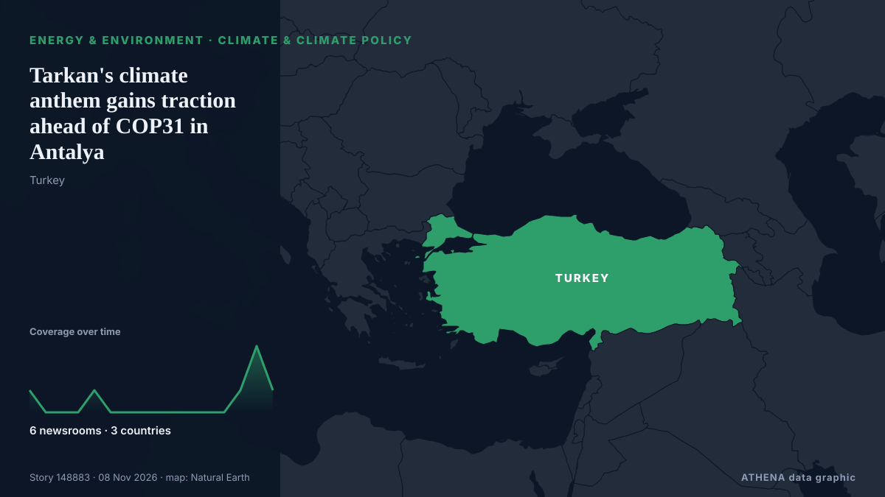

Ενέργεια, Πόροι & Περιβάλλον
ΧορηγούμενοΠαρουσιάζεται από  Cybernetics and Artificial Intelligence Lab Welcome to the Cybernetics and Artificial Intelligence Laboratory, established at the Department of Business Administration of the National and Kapodistrian University of Athens. The lab is headed by Professor Dimitrios Thomakos. The lab aims to do research that can be published in top venues. Our research uses tools and methods of Artificial Intelligence, and lies in the following areas: - Forecasting - Decision making - Cyber security - Finance We are always looking forward to collaborating with exceptional students!
Cybernetics and Artificial Intelligence Lab Welcome to the Cybernetics and Artificial Intelligence Laboratory, established at the Department of Business Administration of the National and Kapodistrian University of Athens. The lab is headed by Professor Dimitrios Thomakos. The lab aims to do research that can be published in top venues. Our research uses tools and methods of Artificial Intelligence, and lies in the following areas: - Forecasting - Decision making - Cyber security - Finance We are always looking forward to collaborating with exceptional students!
Οι τίτλοι των ειδήσεων παρουσιάζονται στα αγγλικά, όπως δημοσιεύτηκαν.

Κλίμα & κλιματική πολιτικήTarkan's climate anthem gains traction ahead of COP31 in Antalya
Türkiye will use music, dance and art to bring its climate message to a global audience during the U.N. από Daily Sabah
| 26 Οκτ | 79 |
|---|---|
| 27 Οκτ | 113 |
| 28 Οκτ | 89 |
| 29 Οκτ | 76 |
| 30 Οκτ | 94 |
| 31 Οκτ | 39 |
| 1 Νοε | 55 |
| 2 Νοε | 121 |
| 3 Νοε | 93 |
| 4 Νοε | 99 |
| 5 Νοε | 96 |
| 6 Νοε | 56 |
| 7 Νοε | 28 |
| 8 Νοε | 7 |
IIT to Rohini: 10 most polluted areas in Delhi amid ‘very poor’ AQI on Diwali eve
An analysis by the HT Pollution Dashboard showed that 21 stations recorded 'severe' air quality, while 30 were in the 'very poor' category. από Hindustan Times
As COP31 comes to Turkey, satellites reveal a landfill methane problem
Turkey, the host for COP31, is the world’s fifth-biggest emitter of methane from solid waste. από The Straits Times
Heavy Rain Floods 70,000 Displacement Tents Across Gaza
Thousands of families face worsening conditions as winter storms leave tents flooded and belongings destroyed. από News of Bahrain
Israel’s Arab Joint List warns of worsening Gaza crisis as floods swamp 70,000 tents
Alliance urges attention to plight of displaced Palestinians facing fourth winter in tents. από Anadolu Agency (English)
The Great Pacific Garbage Patch May Be Changing The Color of The Ocean
There's a monster lurking in the middle of the North Pacific Ocean, neither kraken nor... από ScienceAlert
Expert explains why Ukraine is exporting electricity despite power outages
Power outages in Ukraine are currently being driven not by a shortage of generating capacity but by damage to electricity transmission infrastructure. από Ukrinform (English)
French research vessel Abeille Marengo set to sail for cable surveys
The French research vessel Abeille Marengo is set to sail from Heraklion to begin seabed surveys for the electricity cable between Greece and Cyprus. από Cyprus Mail
Paul Whitehouse to launch animated show for children with wife Mine Conkbayir
That’s Jokes will be available on CBBC and BBC iPlayer from next week. από Evening Standard (London)
Cyprus to UN: Turkish seabed surveys for gas pipeline violate sovereignty
Cyprus has informed the United Nations that Turkish research vessels are carrying out seabed surveys in its waters for a planned natural gas pipeline to the occupied north. από Cyprus Mail
Kyiv faces worsening electricity and water supply situation due to damage to energy facility in Zhytomyr – Klitschko
Damage to an energy facility in Zhytomyr has worsened electricity supply in Kyiv. από Ukrinform (English)
Officials Search for Bear that Killed a Mother, Daughter in British Columbia
Family members have identified the two victims of a suspected fatal grizzly bear attack near Bella Coola, B.C., as Jennifer Balcarras, 48, and her daughter Selah Reed, 20. από CBC News (alternative feed)
ADNOC signs LNG deal with Gujarat Energy to supply 4 million tonnes over 10 years
Woodside will supply QatarEnergy with up to 3 million tpy of LNG for 20 years from its Louisiana LNG project, with deliveries expected to start in 2030. από Oil & Gas Journal
Fiji PM Rabuka downplays El Niño impact: 'Are people dying? No. We can manage'
The Fijian prime minister has brushed off the severity of the impact of the El Niño weather conditions that are causing widespread drought across the country. από RNZ National
Democrats planning flood of AI bills when they take control of Congress
Most US voters think Trump's administration and Congress are not taking the risks of AI seriously enough. από Express Tribune
Current price of oil as of November 4, 2026
When oil prices change, it affects your energy costs—and even the price of everyday items. από Fortune
Namibia: Dangote Promises Cheaper Fuel for Namibia...Launches N$41.6b Pipeline Project in Walvis
[New Era] Walvis Bay -- Namibians could see a significant reduction in fuel prices when the Dangote Namibia Tank Farm and Regional Pipeline project becomes operational. από AllAfrica
90 mil. displaced people at risk from climate threats, UN refugee agency says
Nearly 90 million forcibly displaced people are living in countries increasingly exposed to climate-related droughts, floods and extreme heat, the UN refugee agency said on Friday, warning ahead of… από The Korea Times
2026 'most likely' to be second-hottest year on record: EU monitor
Paris, France: The world is on track for 2026 to be the second-hottest year on record as an exceptionally strong El Nino weather pattern turbocharges human-driven global warming, t... από Oman Observer
Saudi Arabia braces for thunderstorms, flash floods across most regions through Tuesday
RIYADH: Thunderstorms, potentially heavy rainfall and flash floods are forecast across most regions of Saudi Arabia through Tuesday, prompting Civil Defense authorities to urge residents to exercise… από Arab News
Armenian PM Pashinyan to visit Türkiye to attend COP31
Pashinyan confirms plans to visit Antalya after receiving invitation from Turkish President Erdogan in September. από Anadolu Agency (English)
Global renewable energy capacity to increase by 4,800 GW in 2026–2031
India plans to soon mandate state-owned utilities to add energy storage capacity to take advantage of the clean energy boom with reduced waste of generated power amid lagging storage capacity, a… από OilPrice.com
‘We will not lower our ambition’: Türkiye’s Kurum urges climate action ahead of COP31
Murat Kurum urges countries to deliver on climate finance pledges and accelerate electrification as Türkiye prepares to host the UN summit in Antalya. από TRT World
Brent oil price benchmark set for biggest weekly drop since 2020
LONDON: Oil prices were set for a sharp weekly fall after the election losses of US President Donald Trump's Republican Party raised hopes of a de-escalation in the US-Israeli war on Iran and a stock… από New Straits Times
Oil prices rebound as US results, Iran war shape markets
Oil prices rose on Friday, recovering some of their recent losses after a turbulent week marked by the US midterm elections and uncertainty over the course of the war between the U... από Oman Observer
Turkey says gas pipeline project with Turkish Cypriots can provide power to whole island
Turkish Energy Minister Alparslan Bayraktar said a planned natural gas pipeline linking Turkey and the breakaway Turkish Cypriot community could eventually provide power to the entire ethnically… από Cyprus Mail
U.S. crude oil imports from Venezuela in July were highest since 2017
In July 2026, U.S. imports of crude oil from Venezuela averaged 701,000 barrels per day (b/d), the most since May 2017, before decreasing to 655,000 b/d in August, according to data published in our… από US EIA Today in Energy
Gas deposits off Cyprus are an opportunity for the EU, president says
Cyprus's president says natural gas deposits off the country's coast offer the European Union a chance to boost energy security by diversifying supply. από ABC News (International)
Australia to join Indonesia’s wildfire waterbombing operations
Australia will join Indonesia’s efforts to control wildfires, utilizing aircraft to assist in waterbombing operations. από Arab News
‘Blue Tsunami’ to ‘Dem-olition’: How the world covered US midterm results
Even voters in areas that have repeatedly backed US President Donald Trump are no longer on board with the Republican Party, writes Jackie Fox. από RTÉ News
'We have nothing': Displaced mothers in Yemen's Taiz collect plastic to survive
TAIZ, Yemen, Nov 6 - Two single mothers who fled their village three weeks ago are struggling to keep their children fed and warm in the besieged Yemeni city of Taiz, where they live in a damaged… από The Straits Times
Brazil wraps up COP30 with fossil fuel, forest roadmaps, urging shift from talks to action
'We don't need more negotiations. What we need is for governments to start taking action,' says COP30 president Correa do Lago, who led last November's UN climate summit in Belem. από Rappler
Worley Lands EPC Contract for Venture Global's CP2 LNG Expansion
Worley has signed a reimbursable engineering, procurement and construction (EPC) contract with Venture Global for the CP2 Expansion project in Louisiana, United States… από Offshore Engineer
Ukrainian forces strike Russian ammunition depots in Zaporizhzhia, Donetsk regions
Ukraine's Defense Forces struck two Russian ammunition depots in the Zaporizhzhia region on November 5 and overnight into November 6, as well as an enemy drone command post and a fuel and lubricant… από Ukrinform (English)
Injury in Adygea, fire in Krasnodar Region, 142 drones downed: aftermath of new attacks
A Gorlovka resident was injured in a Ukrainian drone attack in the Tsentralno-Gorodskoy District. από TASS (English)